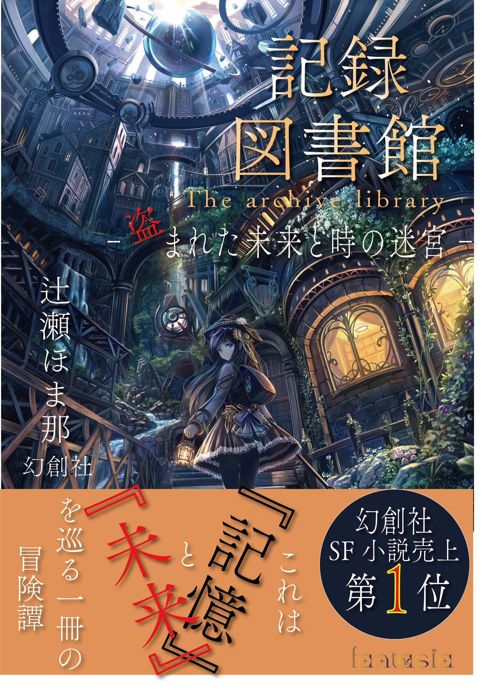

Works
竜ノ巫女（りゅうのみこ） - Draconic Echo
発売日：2022年6月6日
希望小売価格：ダウンロード版 8,900円（税込）、パッケージ版 8,920円（税込）
ジャンル：アクションRPG（ARPG）
戦闘システム：通常時は人型、ゲージが溜まると「竜化モード」発動
（一定時間、超パワーアップ）
カスタム要素：スキル強化、竜の姿の進化（属性変化など）
マップ：広大なオープンフィールド＋ダンジョン探索
遥か昔、世界は「竜」と「人間」が共存していた。しかし竜は人の欲望によって滅び、
今では神話の存在となっていた──。舞台は、滅びの兆しを見せる王国「リゼルディア」。
主人公は、平和な村で育った少女「リュカ」。
ある日、謎の軍による襲撃を受けた際、自身に眠る「竜の力」が目覚める。
リュカは、自身が“最後の竜の巫女”であり、古代竜族の血を引く存在であることを知る。
己の運命と向き合いながら、世界に再び平和をもたらすため旅立つ──。
Nocturne Forest（ノクターンフォレスト）
～竜と少女の記憶～
発売日：2023年10月8日
希望小売価格：基本プレイ無料（アプリ内課金あり）
ジャンル：アクションRPG
戦闘システム：アクションRPG×竜化バトル
対応OS：iOS/Android
特徴：異世界に迷い込んだ主人公が力をつけながら、仲間とともに進んでいく物語。
その世界では、古代の力を手に入れるための冒険が待ち受けており、
プレイヤーは選択肢により異なるエンディングに辿り着く。
FROST DRAGON～ENDLESS WINTER～
発売日：2022年6月6日
希望小売価格：ダウンロード版 8,900円（税込）
パッケージ版 8,920円（税込）
ジャンル：アクションハンティングRPG・ソロ＆マルチプレイ対応
戦闘システム：リアルタイムハンティングアクションシンプル操作で誰でも爽快なアクションが楽しめるが、ドラゴンごとに異なる攻撃パターンを見極める戦略性も必要。
部位破壊システム：翼・尻尾・角などを破壊してドラゴンの行動を制限。素材も入手しやすくなる。
環境ギミックバトル：地形の氷柱崩壊、氷床滑走、雪崩誘発などフィールドの仕掛けを利用して有利に戦うことが可能。
ドラゴン固有AI：地形の氷柱崩壊、氷床滑走、雪崩誘発などフィールドの仕掛けを利用して有利に戦うことが可能。

記録図書館 ―盗まれた未来と時の迷宮―
発売日：:2024年12月24日
希望小売価格：880円(税込)
著者：辻瀬ほま那
出版社：幻創社
あらすじ：この街では、人の記憶も感情も「書物」として保管される。
時を記録する巨大な図書館"記録図
書館”ある日そこから、“未来の本”が盗まれた。
止まりはじめた時間。消えていく記憶。
世界が狂いだす中、司書見習いの少女は失われた未来を追って、
書物に封じられた記憶の迷宮を旅する。記憶をめくるたび、真実が1ページずつ姿を現す。